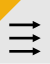
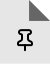

Environments
Import/Export
Help
Using the Extension

|  | Environments | Open the current page in the frontend or the List/Page module of another environment. Project environments are detected based on the current page's URL. |
|  | Favourite | Click the upper-right corner to pin an environment to the right side of the list. |
| Badge | Add and enable color badges in the project settings. |
Project Setup
- Click "Add Project" to create a new project under "Projects"
- Give your project a short descriptive label
- Add environments by filling in the name (keep it short), domain, and TLD fields
- Click the "+" button to add each environment
Use the import/export feature to backup and share your settings with team mates as json file.
TYPO3 Setup
Important:
- To enable page UID detection, you need to add specific markup to your TYPO3 site's templates.
- Deep linking to the List or Page module only works from TYPO3 version > 11.x.
Add one of the following settings to your TypoScript PAGE object.
add data-uid="1" to the body tag of our template: <body data-uid="1">
page = PAGE
page {
...
bodyTagCObject = COA
bodyTagCObject {
wrap =
20 = TEXT
20.value.field = uid
20.stdWrap.noTrimWrap = | data-uid="|"|
}
...
}
or add a <meta name="pageid" content="<pageid>"> meta-tag to the head section
page = PAGE
page.meta {
...
pageID.data = TSFE:id
...
}
About
| Version | 1.0 |
|---|---|
| Requirements | TYPO3 Version ≥ 11.x |
| Author | Andy Meier andy@mindpilot.ch |
| Github | https://github.com/mindpilot/chrome-typo3-env-switcher |
Purpose
This Chrome extension is designed for TYPO3 CMS developers and editors to streamline their workflow when working with multiple environments.
The project idea poped up when switching between many instances of a TYPO3 project felt more and more anoying. Getting uid of a given url should become easyer when an editor is reporting an issue.
Main Features
- Quick environment switching between configurable environments like dev, staging, and production
- TYPO3 page UID detection and display
- Direct links to TYPO3 backend modules
- Project-based configuration
Disclaimer
This extension is provided "as is" without warranty of any kind. Use at your own risk. The developers are not responsible for any issues that may arise from using this extension.
Privacy
This extension does not collect or transmit any personal data. All settings are stored locally in your browser's sync storage.